2.6. 多表操作#
之前的操作主要在单个 DataFrame ，实际上，我们经常需要对多个 DataFrame 联合起来进行分析。pandas 提供了多 DataFrame 之间的合并和连接的操作，分别是 merge() 和 concat() 函数。比如，我们可以将两个 DataFrame 合并成一个，且保留所有的列。
2.6.1. merge#
pandas 的 merge() 操作可以合并两个 DataFrame（或者称为表） ，类似于 SQL 中的 JOIN 操作。 我们可以想象成：一个大表被拆分成两个小表，两个小表都包含一些同样的数据。现在我们需要把两个小表合并，生成一个大表，大表包含了两个小表的字段。

图 2.8 对两个 DataFrame 进行 merge 操作#
import pandas as pd
import numpy as np
# customer_prod_df
d1 = {'customer_id':pd.Series([1,2,3,4,5,6]),
'product':pd.Series(['Oven','Oven','Oven','Television','Television','Television'])}
customer_prod_df = pd.DataFrame(d1)
print("customer_prod_df:")
customer_prod_df
customer_prod_df:
| customer_id | product | |
|---|---|---|
| 0 | 1 | Oven |
| 1 | 2 | Oven |
| 2 | 3 | Oven |
| 3 | 4 | Television |
| 4 | 5 | Television |
| 5 | 6 | Television |
# customer_state_df
d2 = {'customer_id':pd.Series([2,4,6,7,8]),
'state':pd.Series(['California','California','Texas','New York','Indiana'])}
customer_state_df = pd.DataFrame(d2)
print("customer_state_df:")
customer_state_df
customer_state_df:
| customer_id | state | |
|---|---|---|
| 0 | 2 | California |
| 1 | 4 | California |
| 2 | 6 | Texas |
| 3 | 7 | New York |
| 4 | 8 | Indiana |
我们先用下面的代码得到合并的结果，所使用的各类参数后面详细探讨。
inner_join_df= pd.merge(customer_prod_df, customer_state_df, on='customer_id', how='inner')
inner_join_df
| customer_id | product | state | |
|---|---|---|---|
| 0 | 2 | Oven | California |
| 1 | 4 | Television | California |
| 2 | 6 | Television | Texas |
合并两个表时，通常需要使用键（key）来判断哪些数据与哪些数据合并。比如本例中，两个表都包含 customer_id 这个字段，customer_id 可以被用来连接这两个 DataFrame。相同 customer_id 的行被合并在一起。
我们回到 merge 函数的参数。完整的参数形式为：pd.merge(left, right, how='inner', on=None, left_on=None, right_on=None, left_index=False, right_index=False, sort=False,suffixes=('_x','_y'))。虽然参数很多，其实大部分时间我们主要关心的是 left、right、how 和 on。
left 与 right 是两个 DataFrame，分别为左侧表和右侧表。
on 表示两个表依据哪个字段（或哪些字段）进行合并。这个字段或这些字段被称为键（key）。两个表的 key 字段应该是表示同一个事物。现在我们要根据 key，把两个 DataFrame 合并成一个更大的表。这个例子中，以 customer_id 为字段进行合并，主要对左右两个表中相同 customer_id 进行操作。
how 表示合并的方式。在合并过程中，左侧表和右侧表的 key 不一定都包含同样的值。比如，如果左侧表包含某个 customer_id 但右侧表不包含这个 customer_id，那应该遵循什么样的逻辑去合并。how='inner' 是其中一种方式，叫做内连接：只有在左侧 DataFrame 和右侧 DataFrame 中 ** 都 ** 存在的行才会包含在结果中。
how 除了 inner，还有其他的选项：outer、left 和 right。

:width:800px
:label:merge-how
2.6.1.1. 连接方式#
外连接
外连接把左右两侧所有的数据都合并到一起，如果某个表有缺失值，无法左右对齐，则填充 NaN。
outer_join_df = pd.merge(customer_prod_df, customer_state_df, on='customer_id', how='outer')
outer_join_df
| customer_id | product | state | |
|---|---|---|---|
| 0 | 1 | Oven | NaN |
| 1 | 2 | Oven | California |
| 2 | 3 | Oven | NaN |
| 3 | 4 | Television | California |
| 4 | 5 | Television | NaN |
| 5 | 6 | Television | Texas |
| 6 | 7 | NaN | New York |
| 7 | 8 | NaN | Indiana |
左连接
左侧表的数据都被保留，如果右侧表有缺失，填充 NaN。
left_join_df= pd.merge(customer_prod_df, customer_state_df, on='customer_id', how='left')
left_join_df
| customer_id | product | state | |
|---|---|---|---|
| 0 | 1 | Oven | NaN |
| 1 | 2 | Oven | California |
| 2 | 3 | Oven | NaN |
| 3 | 4 | Television | California |
| 4 | 5 | Television | NaN |
| 5 | 6 | Television | Texas |
右连接
右侧表的数据都被保留，如果左侧表有缺失，填充 NaN。
right_join_df= pd.merge(customer_prod_df, customer_state_df, on='customer_id', how='right')
right_join_df
| customer_id | product | state | |
|---|---|---|---|
| 0 | 2 | Oven | California |
| 1 | 4 | Television | California |
| 2 | 6 | Television | Texas |
| 3 | 7 | NaN | New York |
| 4 | 8 | NaN | Indiana |
2.6.1.2. 其他合并方式#
还有一些其他合并，不是根据 key 去在左右表中查找。比如，根据 DataFrame 最左侧的 index 列。DataFrame 默认有 index 列，根据该列合并两个表，由于此时不是根据 customer_id 来合并，合并之后保留了两个 customer_id，为了区别左右两表的 customer_id，这里加了后缀 _x 和 _y。
index_df = pd.merge(customer_prod_df, customer_state_df, right_index=True, left_index=True)
index_df
| customer_id_x | product | customer_id_y | state | |
|---|---|---|---|---|
| 0 | 1 | Oven | 2 | California |
| 1 | 2 | Oven | 4 | California |
| 2 | 3 | Oven | 6 | Texas |
| 3 | 4 | Television | 7 | New York |
| 4 | 5 | Television | 8 | Indiana |
2.6.2. concat#
与 merge() 对表结构进行横向的操作不同，concat() 函数默认是进行纵向的合并，也就是将多行进行 堆叠式 的合并，如 图 2.9 所示。
{kind=link}
图 2.9 对两个 DataFrame 进行 concat 操作#
比如下面的例子，把所有的行和所有的列合并在一起，缺失的填充 NaN。
row_concat_df = pd.concat([customer_prod_df, customer_state_df])
row_concat_df
| customer_id | product | state | |
|---|---|---|---|
| 0 | 1 | Oven | NaN |
| 1 | 2 | Oven | NaN |
| 2 | 3 | Oven | NaN |
| 3 | 4 | Television | NaN |
| 4 | 5 | Television | NaN |
| 5 | 6 | Television | NaN |
| 0 | 2 | NaN | California |
| 1 | 4 | NaN | California |
| 2 | 6 | NaN | Texas |
| 3 | 7 | NaN | New York |
| 4 | 8 | NaN | Indiana |
下面的例子，设定了 join="inner"，两个表中都包含 customer_id 字段进行了纵向合并。需要注意的是，concat 是进行纵向的堆叠，而没有去除重复的 customer_id。
concat_inner_df = pd.concat([customer_prod_df, customer_state_df], join = 'inner')
concat_inner_df
| customer_id | |
|---|---|
| 0 | 1 |
| 1 | 2 |
| 2 | 3 |
| 3 | 4 |
| 4 | 5 |
| 5 | 6 |
| 0 | 2 |
| 1 | 4 |
| 2 | 6 |
| 3 | 7 |
| 4 | 8 |
2.6.3. 案例：学生成绩#
我们使用一个学生成绩的案例来演示如何对两个 DataFrame 进行 merge。
Show code cell content
import urllib.request
import os
import pandas as pd
download_url_prefix = "https://godaai.github.io/python-data-science/datasets/student-score"
folder_path = os.path.join(os.getcwd(), "../data/student-score")
score_download_url = f"{download_url_prefix}/score.csv"
student_attr_download_url = f"{download_url_prefix}/student.csv"
score_file_name = score_download_url.split("/")[-1]
student_file_name = student_attr_download_url.split("/")[-1]
score_path = os.path.join(folder_path, score_file_name)
student_path = os.path.join(folder_path, student_file_name)
if not os.path.exists(folder_path):
# 创建文件夹
os.makedirs(folder_path)
print(f"文件夹不存在，已创建。")
urllib.request.urlretrieve(score_download_url, score_path)
urllib.request.urlretrieve(student_attr_download_url, student_path)
print("数据已下载。")
else:
print(f"文件夹已存在，无需操作。")
文件夹已存在，无需操作。
print("student DF:")
student_df = pd.read_csv(student_path, encoding = "UTF-8")
print(f"shape of this DF: {student_df.shape}")
print("the first 2 rows of this DF:")
student_df.head(2)
student DF:
shape of this DF: (44, 7)
the first 2 rows of this DF:
| sno | sname | sex | dept | major | claasno | home_address | |
|---|---|---|---|---|---|---|---|
| 0 | 2019101101 | 张元 | 男 | 信息学院 | 计算机 | 1 | 北京市 |
| 1 | 2019101102 | 李玲 | 女 | 信息学院 | 计算机 | 1 | 天津市 |
print("score DF:")
score_df = pd.read_csv(score_path, encoding = "UTF-8")
print(f"Shape of this DF: {score_df.shape}")
print("the first 2 rows of this DF:")
score_df.head(2)
score DF:
Shape of this DF: (43, 4)
the first 2 rows of this DF:
| sno | cno | cname | score | |
|---|---|---|---|---|
| 0 | 2019101103 | E202 | 宏观经济 | 78 |
| 1 | 2019102105 | E202 | 宏观经济 | 97 |
可以看到两个表都包含了 sno，也就是学号，可以使用学号作为 key 进行合并。
merged_df = pd.merge(left = student_df, right = score_df, how = 'left', on = 'sno')
print(f"shape of this DF: {merged_df.shape}")
print("the first 2 rows:")
merged_df.head(2)
shape of this DF: (44, 10)
the first 2 rows:
| sno | sname | sex | dept | major | claasno | home_address | cno | cname | score | |
|---|---|---|---|---|---|---|---|---|---|---|
| 0 | 2019101101 | 张元 | 男 | 信息学院 | 计算机 | 1 | 北京市 | CS101 | 程序设计 | 89.0 |
| 1 | 2019101102 | 李玲 | 女 | 信息学院 | 计算机 | 1 | 天津市 | CS203 | 数据结构与算法 | 80.0 |
关于合并后的新表，列数一共10列。student_df 一共7列， score_df 一共4列，即：7 + 4 - 1，因为两个表都包含同样的一列 sno，所以需要减一。
我们使用的是 how='left' 的方式进行的合并。行数一共44，这与 student_df 的列数一致。我们打印完整合并后的新表，可以发现，在student_df中包含但 score_df 中不包含的成绩相关的信息显示 NaN。
接下来我们就可以使用各类其他分析方式，对这个新的大表进行数据分析，这里不再赘述。